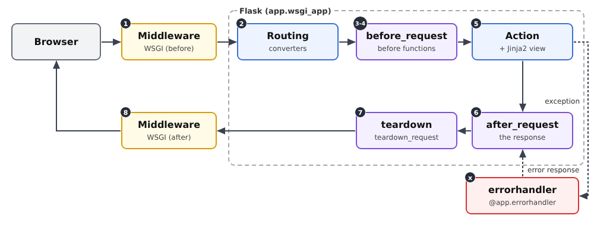
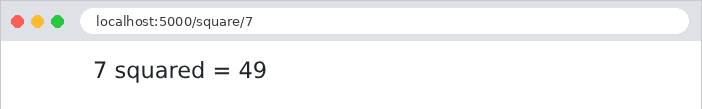

7. Der Lebenszyklus einer Anfrage
Zwischen dem Eintreffen einer Anfrage und dem Versand ihrer Antwort durchläuft [Flask] mehrere Schritte, und die Anwendung kann bei jedem eingreifen. Einigen davon sind wir bereits begegnet: den Konvertern für Pfadvariablen (Beispiele 02 und 12), den [before_request]-Funktionen (Beispiele 16, 22 und 23) und den Fehlerbehandlern (Beispiele 08 und 12). Dieses Kapitel fasst sie in einem einzigen Beispiel zusammen, das bei jedem Schritt eine Meldung in der Konsole ausgibt, sodass Sie die Reihenfolge beobachten können:

- 1 und 8. Die WSGI-Middleware. [WSGI] (*Web Server Gateway Interface*) ist der Standard, der einen in [Python] geschriebenen Webserver mit einer Anwendung verbindet. Aus Sicht des Servers ist eine [Flask]-Anwendung einfach ein aufrufbares Objekt, das die Beschreibung der Anfrage erhält und die Antwort erzeugt. Eine Middleware ist ein ähnliches Objekt, das die Anwendung umhüllt: Sie fängt die Anfrage ab, bevor sie [Flask] erreicht, und danach die Antwort. Sie entspricht den [Java]-Servlet-Filtern;
- 2. Das Routing. [Flask] sucht die Route, die der URL entspricht, und die Routenkonverter wandeln die Pfadvariablen um;
- 3 und 4. Die [before_request]-Funktionen, die in der Reihenfolge ihrer Registrierung ausgeführt werden. Gibt eine von ihnen eine Antwort zurück (oder löst eine Ausnahme aus), endet die Verarbeitung dort: Die Aktion wird nicht aufgerufen. Hier prüfen wir, ob ein Benutzer angemeldet ist (nächstes Kapitel);
- 5. Die Aktion und die View, die sie erzeugt;
- 6. Die [after_request]-Funktionen, die die Antwort erhalten, können sie verändern (einen Header oder ein Cookie hinzufügen) und müssen sie zurückgeben. Sie werden in umgekehrter Reihenfolge ihrer Registrierung ausgeführt;
- 7. Die [teardown_request]-Funktionen, die immer ganz am Ende ausgeführt werden, selbst wenn eine Ausnahme die Verarbeitung unterbrochen hat. Sie können die Antwort nicht mehr verändern; ihr Zweck ist es, Ressourcen freizugeben (etwa eine Datenbankverbindung zu schließen);
- x. Die Fehlerbehandler ([errorhandler]): Eine Ausnahme, die von einer [before_request]-Funktion, einer Aktion oder einer View ausgelöst wird, wird an den für ihre Klasse registrierten Handler übergeben, der eine Fehlerantwort erzeugt. Diese Antwort durchläuft dann wie eine reguläre Antwort die [after_request]-Funktionen.
Sie entsprechen den [Spring MVC]-Interceptors und den [ASP.NET Core MVC]-Action-Filtern. Die Funktionen [before_request], [after_request] und [teardown_request] werden oft als Hooks bezeichnet.
7.1. Beispiel 24: Die Schritte der Verarbeitung einer Anfrage
Die Anwendung hat nur eine Aktion, die das Quadrat einer ganzen Zahl berechnet: [/square/7]. Je nach URL ist sie erfolgreich oder scheitert auf verschiedene Weise.
7.1.1. Die WSGI-Middleware: filters/logger.py
- Zeile 7: Die Middleware erhält die Anwendung, die sie umhüllt;
- Zeile 10: Die spezielle Methode [__call__] macht das Objekt aufrufbar: [middleware(environ, start_response)] führt diese Methode aus. Dies ist die von [WSGI] vorgeschriebene Signatur: [environ] ist ein Wörterbuch, das die Anfrage beschreibt (die Methode in [REQUEST_METHOD], den Pfad in [PATH_INFO], die Parameter in [QUERY_STRING], die Header usw.); [start_response] ist eine vom Server bereitgestellte Funktion, die die Anwendung aufruft, um den Antwortcode und die Header zu melden;
- Zeilen 12–17: Die Middleware gibt die Anfrage aus. Dies ist Meldung Nr. 1: In [Flask] ist noch nichts geschehen;
- Zeilen 22–24: Um den Antwortcode zu ermitteln, übergibt die Middleware der Anwendung – anstelle von [start_response] – eine eigene Funktion, die den Code im Vorbeigehen festhält und dann die eigentliche Funktion aufruft. Dies ist eine innere Funktion (innerhalb einer anderen Funktion definiert): Sie hat Zugriff auf die Variablen der Funktion, die sie enthält, hier die Liste [status];
- Zeile 27: der Aufruf der umhüllten Anwendung: Die übrige Verarbeitung findet innerhalb dieses Aufrufs statt;
- Zeile 28: Meldung Nr. 8, wenn [Flask] fertig ist.
Eine Middleware arbeitet auf der Ebene von [WSGI]: Sie kennt weder [request] noch [g] noch die Routen von [Flask]. Sie dient Verarbeitungen, die für alle Anfragen gelten, unabhängig von der Anwendung: Protokollierung, Komprimierung, Umgang mit einem Proxy usw. [Werkzeug] stellt einige davon bereit, etwa [ProxyFix], das die Adresse des Clients korrigiert, wenn die Anwendung hinter einem Proxyserver liegt (die Fallstudie behandelt dies im Zusammenhang mit der IP-Adresse der Clients).
7.1.2. Der Konverter: filters/integer.py
Ein Konverter (Beispiel 12), der jeden Abschnitt eines Pfades akzeptiert ([[^/]+]: ein oder mehrere Zeichen außer [/]) und ihn vollständig umwandelt, oder in [None] , wenn er ungültig ist. Anders als [<int:n>], das für [/square/abc] eine 404-Seite liefern würde, entscheidet hier die Aktion über das Ergebnis. Er gibt die Meldung Nr. 2 aus.
7.1.3. Markierte Aktionen: filters/marks.py
Die [before_request]-Funktionen laufen vor allen Aktionen. Oft betrifft eine Verarbeitung aber nur bestimmte Aktionen. Eine einfache Möglichkeit, sie festzulegen, besteht darin, sie zu markieren:
Diese beiden Dekoratoren verändern die Aktion selbst nicht: Sie fügen ihr ein Attribut hinzu (in [Python] ist eine Funktion ein Objekt, dem Attribute hinzugefügt werden können) und lassen sie ansonsten unverändert. Die [before_request]-Funktionen suchen diese Markierungen an der Aktion, auf die die Anfrage zielt.
7.1.4. Hooks: filters/hooks.py
- Zeilen 10–11: die Aktion, die die Anfrage verarbeiten wird. Nach dem Routing enthält [request.endpoint] den Namen der gewählten Route ([calc.square]: der Name des Blueprints, ein Punkt, der Funktionsname); [current_app.view_functions] ist das Wörterbuch, das jeden Namen der zugehörigen Funktion zuordnet. Passt keine Route, ist [request.endpoint] auf [None] gesetzt, und die Funktion liefert [None];
- Zeilen 15–16: Ist die Markierung gesetzt? [getattr(object, name, default)] liefert das Attribut mit dem angegebenen Namen oder den Standardwert, wenn es nicht existiert (oder wenn das Objekt [None] ist);
- Zeile 19: Die Callbacks werden von einer Funktion registriert, die von [app.py] aufgerufen wird;
- Zeilen 24–28: der erste Hook, Meldung Nr. 3: Bei einer mit [block] markierten Aktion führt der Parameter [?block] der URL zu einem 403-Fehler (*Forbidden*, Zugriff verweigert): [abort] löst eine Ausnahme aus, die die Verarbeitung unterbricht;
- Zeilen 31–35: der zweite Hook, Meldung Nr. 4: Bei einer mit [timing] markierten Aktion wird die Startzeit in [g] abgelegt. [time.perf_counter()] ist eine präzise Uhr, die zum Messen von Zeitspannen gedacht ist;
- Zeilen 39–43: Meldung Nr. 6. Die Funktion erhält die Antwort und muss sie (gegebenenfalls verändert) zurückgeben. [response.status_code] ist der Antwortcode;
- Zeilen 47–52: Meldung Nr. 7 mit der seit Hook Nr. 4 verstrichenen Zeit. Der Test ["start" in g] prüft, ob die Messung begonnen hat. Die Funktion erhält die Ausnahme, die die Verarbeitung unterbrochen hat, falls es eine nicht behandelte gibt, und andernfalls [None].
7.1.5. Fehlerbehandlung: filters/errors.py
- Zeilen 9–13: ein Ausnahmehandler für die Klasse [ValueError] (und ihre Unterklassen): ein „unerwarteter“ Fehler, umgewandelt in eine „benutzerdefinierte“ Fehlerseite mit dem Statuscode 500 (*Internal Server Error*). Die Meldung der Ausnahme wird in der Konsole angezeigt, aber nicht auf der Seite: Sie kann interne Details enthalten, die für den Benutzer nicht relevant sind;
- Zeilen 17–20: ein Handler für alle HTTP-Fehler. [abort(400)], [abort(403)], eine URL ohne passende Route (404), eine nicht erlaubte Methode (405): Alle lösen eine Ausnahme einer Unterklasse von [HTTPException] ([BadRequest], [Forbidden], [NotFound] ...) aus, die ihren Code im Attribut [code] trägt. Dieser eine Handler ersetzt daher alle englischen Fehlerseiten von [Werkzeug] durch unsere.
Bei einer Ausnahme wählt [Flask] den Handler, der für die ihr nächstgelegene Klasse registriert ist. Man kann auch einen Handler für einen bestimmten Code registrieren: [@app.errorhandler(404)]. Eine Ausnahme ohne Handler wird zu einem 500-Fehler: Im Debug-Modus ist das die Debug-Seite (Beispiel 03); ohne Debug-Modus ist es die Standard-Fehlerseite 500 oder die Seite des für den Code 500 registrierten Handlers.
7.1.6. Der Controller und die Fehlerseite
- Zeilen 9–11: Die Route verwendet den Konverter [integer]; die Aktion trägt beide Dekoratoren. Auch hier kommt es auf die Reihenfolge an (Beispiel 12): Dekoratoren werden von unten nach oben angewendet, und der Routen-Dekorator muss der zuletzt angewendete (der zuerst geschriebene) sein, damit die dekorierte Funktion registriert wird;
- Zeile 15: ein Parameter, der keine ganze Zahl ist: Fehler 400;
- Zeile 17: Die Zahl 13 löst einen „unerwarteten“ Fehler aus;
- Zeile 18: der Normalfall.
Die Fehlerseite erhält den Fehlercode und zeigt eine passende Meldung an.
7.1.7. Konfiguration: app.py
- Zeile 21: der Konverter;
- Zeilen 25–27: die Callbacks und Fehlerbehandler;
- Zeile 29: die Middleware. [app.wsgi_app] ist die Methode, über die der Server die [Flask]-Anwendung aufruft; sie wird durch die Middleware ersetzt, die die alte aufrufen wird. Wir umhüllen [app.wsgi_app] und nicht [app] selbst, damit die Variable [app] das Objekt [Flask] mit seinen Methoden bleibt ([run], [route] ...).
7.1.8. Ausführung
Der Normalfall, [/square/7]:

Die Konsole des Servers zeigt die acht Schritte in der richtigen Reihenfolge an:
Die letzte Zeile ist der Protokolleintrag des Entwicklungsservers von [Werkzeug], geschrieben nach dem Senden der Antwort. Ein blockierter Zugriff, [/square/7?block]:

Der erste Aufruf hat eine Ausnahme ausgelöst: Der zweite Aufruf und die Aktion wurden nicht ausgeführt. Die vom Handler erzeugte Fehlerantwort durchläuft [after_request]; [teardown_request] wurde aufgerufen, zeigte aber nichts an, da die Messung nicht begonnen hatte. Ein Parameter, der keine ganze Zahl ist, [/square/abc]:

Diesmal wurde die Aktion aufgerufen – [None] – und sie hat den Fehler 400 ausgelöst. Ein „unerwarteter“ Fehler, [/square/13]:

Die Ausnahme wurde von ihrem Handler behandelt: Der Benutzer sieht die „benutzerdefinierte“ Fehlerseite und nicht die Debug-Seite, obwohl der Debug-Modus aktiviert ist. Schließlich eine URL, die keiner Route entspricht, [/unknown]:
Das Routing ist fehlgeschlagen: keine Route, kein Konverter, keine Aktion. Die Callbacks wurden ausgeführt, zeigten aber nichts an, da sie keine Zielaktion finden konnten. Die 404-Seite ist unsere eigene:
Konzentrieren wir uns auf das Wesentliche. Die [before_request]-Funktionen sind der richtige Ort für Prüfungen, die vielen Aktionen gemeinsam sind (Ist der Benutzer angemeldet? Hat er die Berechtigung für diese Aktion?): Das nächste Kapitel nutzt sie für die Authentifizierung. Fehlerbehandler stellen sicher, dass der Benutzer unabhängig vom Fehler nie eine technische Seite sieht: Die Fallstudie enthält für jede Fehlerart einen.